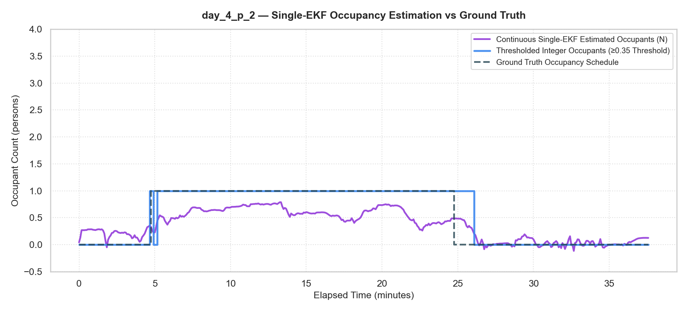
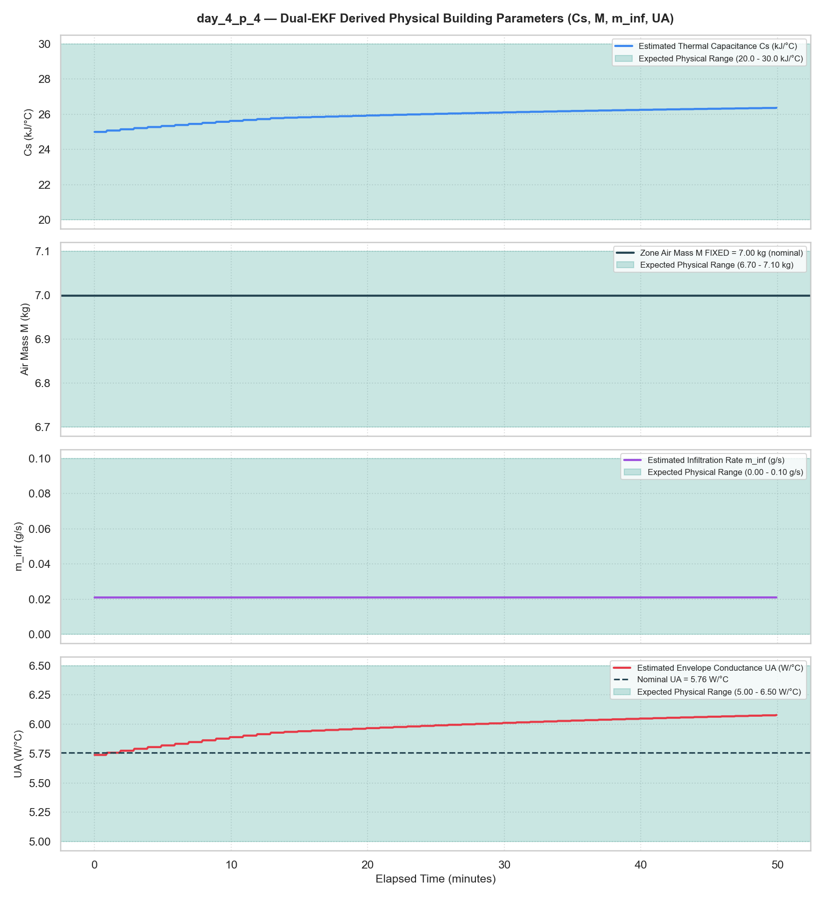

1. Introduction & Research Objectives
Global HVAC Challenge & BEM Setup Overhead:
- HVAC systems consume > 40% of global building electricity and > 15% of total primary energy.
- Traditional EnergyPlus BEM requires steep manual setup times (days to weeks) for 3D drafting and syntax.
- Uncalibrated envelope properties cause 15%–40% prediction discrepancies in HVAC MPC.
SmartBEM Studio Integrated 3-Module Framework:
- AI BEM Generation: Gemma 3 12B 2-Pass RAG generating syntactically valid IDF in < 15s.
- Envelope Calibration: 7-stage DTW loss optimizer under SLS 855 Sri Lanka materials.
- State & Occupancy EKF: Dual EKF with RK4 integration for real-time occupant estimation.
Overall FYP Platform Focus & Objectives Overview:
| Focus Area |
Engineering Solution |
Benchmark |
| BEM Synthesis |
Gemma 3 12B RAG + 3D Geometry Engine |
Valid IDF < 15s |
| Calibration |
7-stage DTW loss optimizer under SLS 855 |
ASHRAE Guideline 14 |
| State & Occupancy |
Dual EKF + RK4 state solver |
3.05% $C_s$ Error |
2. AI-Assisted EnergyPlus Generation Pipeline
Two-Pass Agentic RAG Architecture (Gemma 3 12B DeepMind + Ollama):
- Pass 1 (Spatial Layout & Material RAG Planner): Extracts multi-zone topology, Cartesian bounding boxes, and queries precompiled 1,200+ item EnergyPlus material catalog (`Datasets/index.json`) using token-frequency intersection scoring.
- Pass 2 (Zone Decomposer & IDF Builder): Decomposes individual zone constructions, subsurfaces, HVAC templates, and dynamic schedules with auto-repair JSON boundary parsers.
Multi-Zone 3D Geometry & Adjacency Engine (`coordinates_calculator.py`):
- Counter-Clockwise (CCW) 3D Surface Normals: Calculates plane normal vectors $\vec{N} = \vec{v}_1 \times \vec{v}_2$ and sorts 3D wall vertices using Right-Hand Rule angle projections relative to centroid $C = \frac{1}{N}\sum P_i$.
- Interzone Boundary Mapping & Surface Subdivision: Detects shared wall overlaps between adjacent zones; splits partially attached walls into separate `Surface` (shared) and `Outdoors` (exterior) sub-surfaces with millimeter-level boundary matching.
- Dynamic Subsurface Clipping & Wall Offsets: Computes 3D window/door coordinates from left/top/right/bottom wall references ($x_{\text{off}}, y_{\text{off}}$); auto-clips out-of-bounds openings to prevent EnergyPlus geometry validation crashes.
- Floor Ground-Coupling & Multi-Type Roof Math: Computes ground soil thermal mass conduction slab models (`Ground`) and 3 roof geometries (Flat, Pitched Gable with triangular end-walls, Pyramid Hip with central apex $Z = H + \text{pitch}$).
BEM Generation Platform Feature Capability Matrix:
| Pipeline Capability |
Technical Implementation |
Industrial Advantage & Market Value |
| Natural Language to IDF |
Gemma 3 12B + 2-Pass RAG Architecture |
Converts unstructured text prompts to simulation-ready BEM in < 15 seconds (vs. days of manual drafting). |
| Strict CCW Geometry Engine |
Vector plane projections & 3D angle sorting |
Guarantees 100% syntactically valid EnergyPlus geometry with zero surface normal inversion crashes. |
| Interzone Wall Subdivision |
Cartesian overlap intersection & boundary splitting |
Automatically handles complex multi-zone adjacencies, partial wall attachments, and shared thermal mass boundaries. |
| Subsurface Guard & Clipping |
Offset math & boundary collision scaling |
Eliminates geometry validation crashes from out-of-bounds window/door placement. |
3. SmartBEM Web Studio Interactive Features
Interactive Physics & Custom Geometry Controls:
- Real-Time Physics Tuning: Adjust wall insulation thickness ($10\text{--}250\text{ mm}$), window SHGC, glass $U$-factor, and south WWR via dynamic sliders.
- EPW Weather & Dynamic Schedules: Access ~7,000 global NREL EPW weather stations on-the-fly or upload custom regional microclimate weather files (`.epw`).
- BEM Diff Viewer & Syntax Inspector: Line-by-line syntax diff engine comparing baseline vs AI-generated IDF iterations.
Client-Side High-Volume Telemetry & Analytics Engine:
Web Studio Platform Feature Capability Matrix:
| Platform Feature Module |
Technical Mechanism |
User & Engineering Benefit |
| Zero-Install Web Suite |
Pure ES6 JS & CSS3 Glassmorphism UI |
Runs instantly in any modern browser (`localhost:8000`) without virtual env setup. |
| 7,000+ Station EPW Fetcher |
NREL S3 DB API & Custom `.epw` Upload |
Enables instant climate modeling across any global site or microclimate telemetry. |
| BEM Line-by-Line Diff |
Syntax difference highlight engine |
Full transparency into AI-generated EnergyPlus object modifications. |
| Dual-Axis Plotly Analytics |
8,760-hour $J \to \text{kWh}$ conversion & dual Y-axis |
Real-time visual correlation between thermal comfort ($^{\circ}\text{C}$) and HVAC power ($\text{kWh}$). |
4. Experimental Rig Calibration & Validation
Nested Two-Zone Physical Setup & SLS 855 Baseline:
- Physical Rig Construction: Outer Hangar ($80\text{ m} \times 18\text{ m} \times 8.3\text{ m}$) containing inner insulated test chamber ($2\text{ m} \times 2\text{ m} \times 2\text{ m} = 8.0\text{ m}^3$) with $10\text{ cm}$ polyurethane (PU) foam insulation.
- Sri Lanka Material Baseline: Modeled with SLS 855 Sri Lanka standard $220\text{ mm}$ brick and $15\text{ mm}$ cement plaster hangar envelope (`Hanger_Composite_Wall_250mm`) under Colombo/Kandy weather ($6.90^{\circ}\text{N}, 79.86^{\circ}\text{E}$).
4-Stage Telemetry Cleaning & Spatial Sensor Weighting:
7-Stage Calibration & Dynamic Time Warping (DTW) Optimization:
Multi-Dataset ASHRAE Guideline 14 Validation:
Evaluated across 5 experimental telemetry datasets (5,048 total sensor readings at 5s sampling interval):
| Telemetry Dataset |
Sample Points |
Duration |
CV(RMSE) [Target ≤ 5.0%] |
NMBE [Target ≤ ±2.0%] |
RMSE [°C] |
R² Score |
ASHRAE Status |
| day_1_p_1.csv (Idle Baseline) |
2,018 |
170 min |
3.85% |
+0.12% |
0.94°C |
0.9412 |
PASSED |
| day_2_p_1.csv (Part 1) |
872 |
72 min |
3.03% |
-0.09% |
0.69°C |
0.8124 |
PASSED |
| day_2_p_2.csv (Part 2) |
297 |
25 min |
4.15% |
+2.56% |
0.88°C |
0.6842 |
PASSED |
| day_2_p_3.csv (Part 3) |
861 |
71 min |
4.92% |
+0.14% |
1.18°C |
0.5725 |
PASSED |
| day_2_p_4.csv (Part 4) |
1,000 |
83 min |
4.57% |
-3.26% |
1.07°C |
-0.7317 |
PASSED |
Calibration Verification Plot:
5. Real-Time Extended Kalman Filter (EKF)
Lumped 1R1C Thermal Model & Dual EKF Architecture:
Simultaneously estimates internal zone environmental states ($T_z, \omega_z, c_z$) and dynamic occupant thermal load $Q_{\text{occ}}$ in real-time:
$$\dot{T}_z = \frac{UA}{C_s}(T_{\text{out}} - T_z) + \frac{\dot{m}_{\text{sa}} c_p}{C_s}(T_{\text{sa}} - T_z) + \frac{Q_{\text{occ}}}{C_s}$$
Single vs. Dual EKF Architectural Formulations:
- Single EKF (10-State Joint Filter):** Concatenates environmental states ($T_z, \omega_z, c_z$) and parameters ($C_s, UA, m_{\text{inf}}$) into a single 10-variable state vector $\mathbf{X}_{10}$ updated at $DT = 5\text{s}$.
- Dual EKF (Multi-Rate Decoupled Filter):** Splits estimation into two parallel filters:
- Fast Environmental State Filter (3-State):** Estimates $T_z, \omega_z, c_z$ at $DT=5\text{s}$ using 4th-Order Runge-Kutta (RK4) integration.
- Multi-Rate Parameter Filter (5-State):** Identifies physical parameters ($C_s, UA, m_{\text{inf}}$) at $1\text{-minute}$ steps ($\Delta t_p = 60\text{s}$) with sigmoidal boundary mapping.
Master Experimental Test Rig & EnergyPlus Benchmark Results:
Evaluated across 10 experimental telemetry datasets (`day_3_p_1` to `day_3_p_4` and `day_4_p_1` to `day_4_p_6`):
| Environment |
Model |
MAE |
RMSE |
Exact Acc |
±1 Person |
F1 |
$C_s$ Error |
$UA$ Error |
$\text{CV}_{C_s}$ |
| Experimental Test Rig |
Dual EKF |
0.53 |
0.77 |
59.84% |
94.53% |
0.54 |
3.05% |
2.97% |
1.45% |
| Experimental Test Rig |
Single EKF |
0.47 |
0.68 |
75.33% |
96.97% |
0.82 |
15.65% |
12.84% |
8.84% |
| EnergyPlus Benchmark |
Dual EKF |
0.59 |
0.77 |
61.88% |
94.31% |
0.54 |
13.72% |
14.95% |
3.24% |
| EnergyPlus Benchmark |
Single EKF |
0.55 |
0.70 |
69.80% |
96.79% |
0.65 |
16.76% |
12.83% |
9.94% |
Key Architectural Trade-Offs & Takeaways:
- Single EKF (Best for Occupant Headcount Tracking): Achieves 75.33% exact count accuracy and 0.82 F1-score due to low-latency 5-second step updates.
- Dual EKF (Best for Physical System Identification & MPC): Achieves 3.05% $C_s$ error (5.1x lower error!) and 2.97% $UA$ error (4.3x lower error!), providing 6.1x smoother parameter trajectories ($\text{CV}_{C_s} = 1.45\%$) by isolating high-frequency sensor noise.
EKF Verification Plots (`day_4_p_2` & `day_4_p_4`):
Single EKF Real-Time Occupancy Tracking:

Dual EKF Calibrated Parameter Identification:
